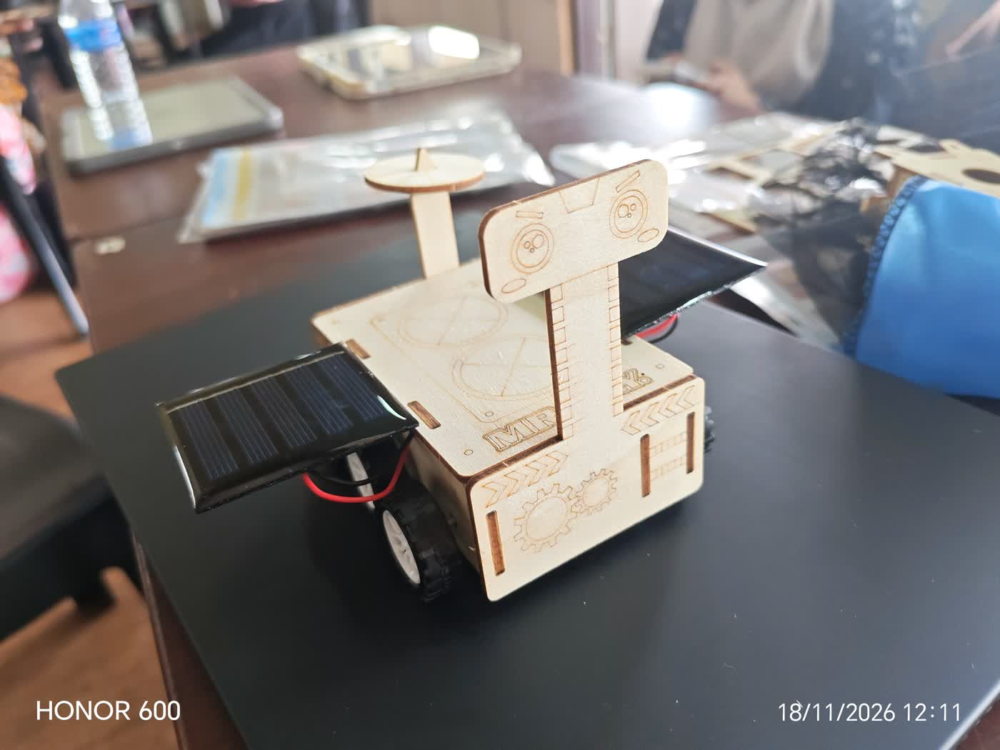

DEMONSTRASI INTERAKTIF · KIT T-M189
Daripada cahaya matahari kepada gerakan: bagaimana kereta kayu ini bergerak tanpa bateri.
Tekan → atau klik untuk teruskan
KENALI KIT
Kereta diperbuat daripada kayu, dua panel solar dan satu motor DC. Cahaya matahari terus ditukar menjadi elektrik yang memutarkan roda.
01
Menukar cahaya kepada elektrik.
02
Menukar elektrik kepada putaran.
03
3 gandar optik, gelang getah dan puli memindahkan putaran.
04
Papan potongan laser, penutup penebat ×2, pita dua muka ×2.
Solar-Powered Mars Rover Wind Car · Demo
ANATOMI · KLIK UNTUK SOROT

1
2
3
4
5
1
Panel solar
Menangkap cahaya dan menghasilkan elektrik.
2
Kepala robot & tiang
Penyokong kayu, rupa khas rover.
3
Piring antena
Perhiasan di atas, meniru antena rover NASA.
4
Badan kayu
Tempat motor, wayar dan penggerak.
5
Roda getah
Berputar kerana disambung kepada motor.
Foto: kereta yang anda pasang
CARA IA BERFUNGSI
Sumber tenaga cahaya.
Cahaya jadi elektrik.
Merah (+), hitam (−).
Elektrik jadi putaran.
Putaran jadi gerak ke hadapan.
Tenaga cahaya
Tenaga elektrik (arus terus, DC)
Tenaga gerakan
Klik untuk memaparkan jenis tenaga pada setiap peringkat
VIDEO DEMONSTRASI · ANIMASI
Demo berulang secara automatik: cerah → mendung → gelap
LITAR ELEKTRIK
1
Satukan wayar merah (+)
Kedua-dua panel disambung jadi satu ke motor.
2
Satukan wayar hitam (−)
Sama juga: semua hitam jadi satu.
3
Dua panel selari
Arus bertambah, jadi motor lebih bertenaga.
4
Kutub terbalik?
Motor berputar ke belakang.
Panel solar A
Panel solar B
Motor DC
merah (+)
hitam (−)
Titik biru = arus elektrik yang mengalir
PEMINDAHAN PUTARAN
1
Motor berputar laju
Puli kecil melekat pada aci motor.
2
Gelang getah menarik puli besar
Puli besar dipasang pada gandar roda.
3
Lebih perlahan, lebih kuat
Putaran berkurang, daya tolak bertambah. Sesuai untuk motor kecil.
Puli kecil
(aci motor)
Puli besar (gandar roda)
Ilustrasi nisbah 3 : 1. Saiz sebenar kit mungkin berbeza.
Puli kecil berputar 3× untuk satu putaran puli besar
PEMASANGAN · LANGKAH 1–8
1
Kenali bahan
Semak semua bahagian dalam kit.
2
Papan asas
Sediakan papan kayu, pasang struktur bawah.
3
Semak lubang
Perhatikan kedudukan lubang pada papan.
4
Pasang papan sisi
Jajarkan lubang dengan betul.
5
Penyokong menegak
Pasang tiang kemudian lekatkan pada asas.
6
Sediakan motor
Pasang puli kecil pada aci motor.
7
Pasang motor
Kunci motor di dalam struktur utama.
8
Panel sisi
Pasang, kemudian sediakan lubang roda.
Klik untuk memaparkan langkah seterusnya · mengikut buku panduan T-M189
PEMASANGAN · LANGKAH 9–18
9
Gandar roda
Masukkan gandar melalui rangka kayu.
10
Roda & gelang getah
Pasang roda, sangkutkan gelang pada puli.
11
Sediakan panel
Persediaan memasang panel solar.
12
Panel di kedua-dua sisi
Merah dengan merah, hitam dengan hitam.
13
Semak sambungan
Semua + dan − mesti bersambung betul.
14
Penutup atas
Pasang penutup kayu bahagian atas.
15
Pemasang motor
Pasang dudukan motor.
16
Kipas
Pasang piring di bahagian atas.
17
Pemasangan akhir
Pastikan semua bahagian terpasang.
18
Sedia bergerak!
Letakkan di bawah cahaya matahari.
Klik untuk memaparkan langkah seterusnya
TIP & PENYELESAIAN MASALAH
| Simptom | Kemungkinan punca | Penyelesaian |
|---|---|---|
| Roda tidak berputar | Cahaya terlalu lemah | Bawa ke cahaya matahari terus atau lampu terang |
| Motor berdengung, roda diam | Gelang getah terlalu ketat | Longgarkan gelang, putar roda dengan tangan |
| Tiada tindak balas | Wayar tercabut atau salah sambung | Rapatkan merah dengan merah, hitam dengan hitam |
| Kereta bergerak ke belakang | Kutub terbalik | Tukar wayar merah dan hitam pada motor |
| Roda tergelincir | Gelang licin atau longgar | Bersihkan puli, laraskan semula gelang |
Uji di bawah matahari dahulu sebelum menutup badan kereta
SAINS DI SEBALIKNYA
Cahaya menolak elektron dalam sel panel sehingga mengalir sebagai arus elektrik.
Arus elektrik dalam medan magnet menghasilkan daya yang memutarkan aci.
Rover seperti Spirit dan Opportunity menggunakan panel solar untuk menjelajah Marikh.
Tenaga suria bersih dan boleh diperbaharui. Kit ini mengajar prinsip yang sama dalam skala kecil.
Klik untuk memaparkan setiap konsep
KUIS PANTAS
Terima kasih! Rover solar anda sedia menjelajah.